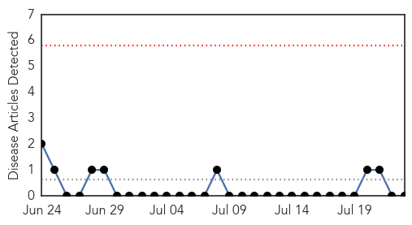

Influenza
30-Day Web Trend
1 alerts, 0 warnings

30-Day Twitter Trend
0 alerts, 0 warnings

Article Locations

Article Confidences

Top Articles:
- 0.948
- Scope Blog
- 0.909
- BARDA: Recent 'universal' flu vaccine proposals fell short
- 0.780
- NC Officials Expect To See More Cases of Canine Influenza
- 0.704
- Italian court rules mercury and aluminum in vaccines cause autism
- 0.691
- Bird Flu Vaccine 100% Effective On Chickens, Undergoing Turkey Testing
- 0.582
- Nebraska officials lift bird flu quarantine
- 0.509
- African Poultry Wrap: Disease Pressures; Poultry Price Fluctuations
Top Tweets:
-
No tweets found for Jul 23, 2015
Bubonic Plague
30-Day Web Trend
0 alerts, 0 warnings

30-Day Twitter Trend
0 alerts, 0 warnings

Article Locations

Article Confidences

Top Articles:
-
No articles found for Jul 23, 2015
Top Tweets:
-
No tweets found for Jul 23, 2015